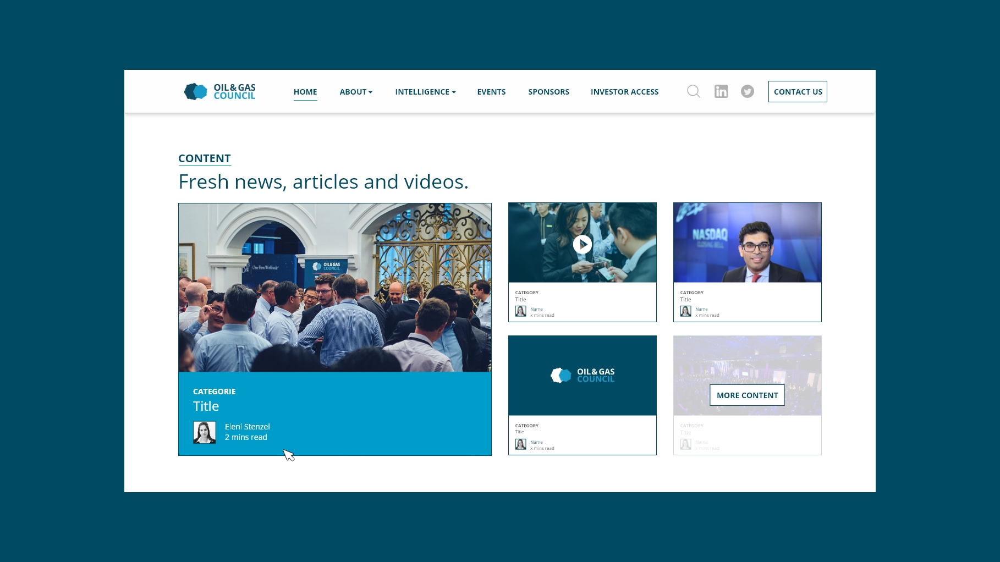
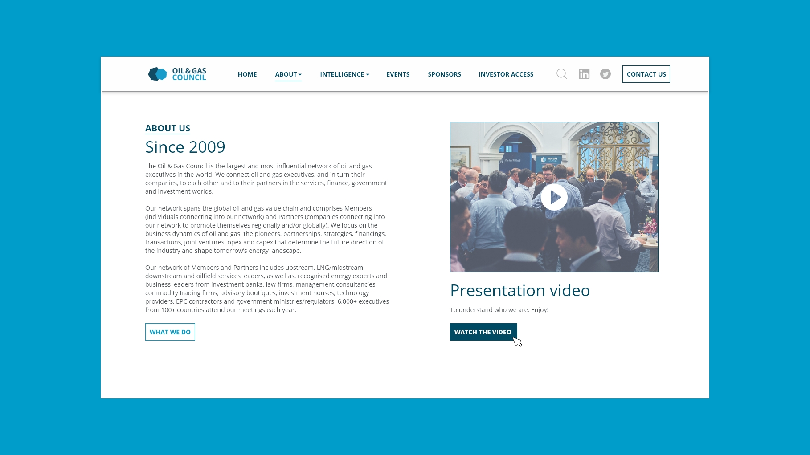
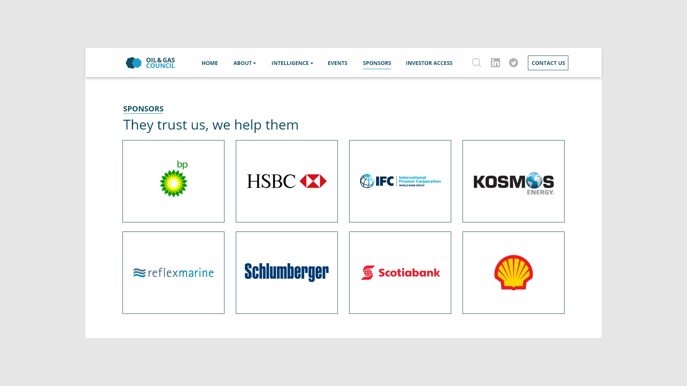
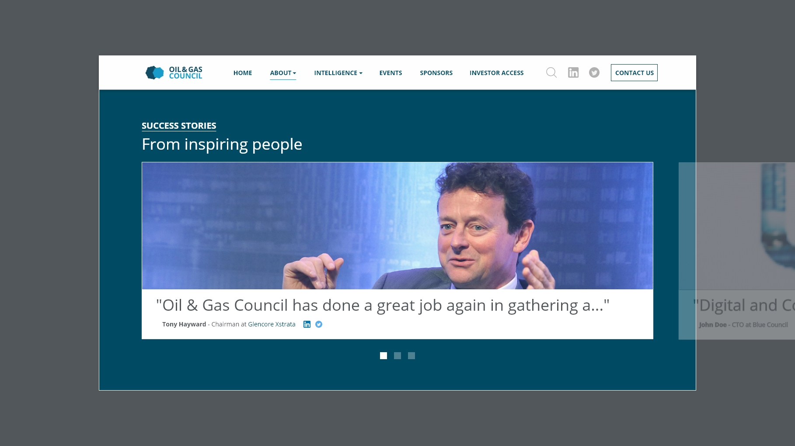

Oil and Gas Council
Webdesign & Animation 2D
Pendant 4 mois j'ai eu l'opportunité de travailler pour le plus important réseau de gaz et pétrole mondial, directement depuis la branche Sud Africaine au Cap pour une entreprise basée à Londres.
Ma mission principale a été de créer les maquettes graphiques du nouveau site internet tout en l'adaptant aux smatphones et tablettes via Wordpress, l'ancien site vitrine n'étant pas développé en responsive. J'ai aussi eu la chance de travailler sur du contenu web (bannières pour les réseaux sociaux) et print (flyers), ainsi que de l'animation vidéo 2D. Cette dernière mission a été très intéressante, car j'ai pu transmettre un savoir-faire à des employés expérimentés mais qui avaient des lacunes dans de ce domaine malgré la différence d'âge, tout en améliorant grâce à eux mes compétences en PRINT (Indesign).
Bien sûr, travailler pendant 4 mois avec une team sud africaine d'une vingtaine de personnes où j'étais le seul étranger, m'a permis de faire évoluer mon anglais.
Année
Décembre 2017
Read in English 🇬🇧